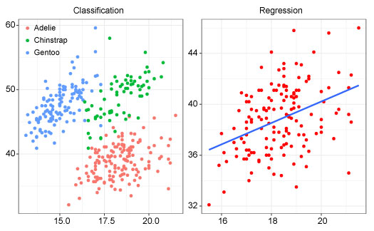

Machine Learning (ML) using classification Algorithm in R
Introduction
Technology is becoming more important in our daily lives in every second. In order to keep up with the pace of these technological changes, scientists are more heavily learning different algorithms to make things easier so as to meet consumer’s demand. These technologies are commonly associated with artificial intelligence, machine learning, deep learning, and neural networks.
Machine learning (ML) and artificial intelligence (AI) are closely related concepts that are often used interchangeably, but they are not the same thing.
Artificial intelligence refers to the ability of machines to mimic human cognitive functions such as learning, reasoning, and problem-solving IBM. AI encompasses a wide range of techniques and approaches, including rule-based systems, expert systems, and machine learning. It is used to predict, automate, and optimize tasks that humans have historically done, such as speech and facial recognition, decision making, and translation.
Machine learning is a specific type of AI that involves the development of algorithms that can learn from data and make predictions or decisions based on that data (Mitchell et al., 2007). In other words, machine learning algorithms are designed to learn patterns and relationships in data without being explicitly programmed to do so.
Machine Learning Algorithms
There are several types of machine learning algorithms, including supervised learning, unsupervised learning, and reinforcement learning. Supervised learning involves using labeled (predictor) training data to train a model to make predictions on new, unseen data. Unsupervised learning involves finding patterns and relationships in data without the use of labeled training data. Reinforcement learning involves training a model to make decisions based on feedback in the form of rewards or punishments.
Classification and regression are two of the most common types of supervised learning algorithms in machine learning and artificial intelligence. Classification is a type of supervised learning algorithm used for predicting discrete or categorical outcomes. It involves mapping input variables to discrete output categories or labels. The objective of classification is to build a model that accurately assigns new data points to the correct class or label.
On the other hand, regression is a type of supervised learning algorithm used for predicting continuous or numeric outcomes. It involves mapping input variables to continuous output values. The objective of regression is to build a model that accurately predicts the value of the dependent variable based on the values of the independent variables.

In this tutorial we are going to deal with classification algorithm in predicting the type of penguin species flipper length, bill dimensions and sex. We will use penguins data from the palmerpenguins package (Horst et al., 2020). It includes measurements for penguin species, island in Palmer Archipelago, size (flipper length, body mass, bill dimensions), and sex.
First, we will load the packages which we are going to use in this tutorial; I will use require() function, but you may also use library() function depending on your preferences.
Data
After loading the packages, we will load the penguins data (Horst et al., 2020) and remove all the missing values in the dataset and equate them as penguin.data. The dataset consist of 333 rows and 8 columns
# A tibble: 333 × 8
species island bill_length_mm bill_depth_mm flipper_length_mm body_mass_g
<fct> <fct> <dbl> <dbl> <int> <int>
1 Adelie Torgersen 39.1 18.7 181 3750
2 Adelie Torgersen 39.5 17.4 186 3800
3 Adelie Torgersen 40.3 18 195 3250
4 Adelie Torgersen 36.7 19.3 193 3450
5 Adelie Torgersen 39.3 20.6 190 3650
6 Adelie Torgersen 38.9 17.8 181 3625
7 Adelie Torgersen 39.2 19.6 195 4675
8 Adelie Torgersen 41.1 17.6 182 3200
9 Adelie Torgersen 38.6 21.2 191 3800
10 Adelie Torgersen 34.6 21.1 198 4400
# ℹ 323 more rows
# ℹ 2 more variables: sex <fct>, year <int>Then, we will look on the internal structure of the dataset using glimpse() function of dplyr package. Our dataset consist of 8 variables (columns); 3 are factors data (species, island and sex), 2 numeric or double data (bill_length_mm, bill_depth_mm) and 3 integers (flipper_length_mm, body_mass_g, year). The variable species have 3 different levels which are Adelie, Gentoo and Chinstrap
Rows: 333
Columns: 8
$ species <fct> Adelie, Adelie, Adelie, Adelie, Adelie, Adelie, Adel…
$ island <fct> Torgersen, Torgersen, Torgersen, Torgersen, Torgerse…
$ bill_length_mm <dbl> 39.1, 39.5, 40.3, 36.7, 39.3, 38.9, 39.2, 41.1, 38.6…
$ bill_depth_mm <dbl> 18.7, 17.4, 18.0, 19.3, 20.6, 17.8, 19.6, 17.6, 21.2…
$ flipper_length_mm <int> 181, 186, 195, 193, 190, 181, 195, 182, 191, 198, 18…
$ body_mass_g <int> 3750, 3800, 3250, 3450, 3650, 3625, 4675, 3200, 3800…
$ sex <fct> male, female, female, female, male, female, male, fe…
$ year <int> 2007, 2007, 2007, 2007, 2007, 2007, 2007, 2007, 2007…In this tutorial we will use only three variables from penguins data; which are species, bill_length_mm, bill_depth_mm. We will run the select() function of dplyr package (Wickham et al., 2022) to select our variables of interest
Before we apply ML algorithms, first we will crosscheck whether the predictor variable (in this case, species), have distinct features (like size) which will help in providing the more accurate output during predictions. When there is interconnection or inter-relation between response variables, some confusion might arise during predictions.
We will use scatter plot between bill_length_mm and bill_depth_mm to see the distribution of each species in the dataset. There is a distinct differences between the size of the three penguins species (Figure 1). Each species has its size range; therefore, the dataset fit best in our analysis.
Classification algorithm
As explained earlier, supervised learning involves training a dataset before you have your predictions. Since our output is categorical (prediction of the species type), then we will use classification algorithm in our analysis.
Data Spliting
Classification algorithm as one of the supervised learning, needs two data types; the training and testing data set. Our penguin.data will be split into these two groups. The training dataset will have a proportion of 70% and the remaining 30% will be the test dataset. In total, our dataset has 333 observations in which 233 samples will be used to train our model while in testing the accuracy of the model 100 samples will used.
<Training/Testing/Total>
<233/100/333>The training data below with 233 samples will be used for training the model;
# A tibble: 233 × 3
species bill_length_mm bill_depth_mm
<fct> <dbl> <dbl>
1 Adelie 36.2 17.2
2 Gentoo 48.7 15.1
3 Chinstrap 49.8 17.3
4 Chinstrap 54.2 20.8
5 Gentoo 44.9 13.3
6 Chinstrap 50.7 19.7
7 Adelie 38.6 17
8 Gentoo 46.2 14.9
9 Gentoo 50.1 15
10 Adelie 39.8 19.1
# ℹ 223 more rowsThe testing data with 100 observations will be used to test the accuracy of the model
# A tibble: 100 × 3
species bill_length_mm bill_depth_mm
<fct> <dbl> <dbl>
1 Adelie 40.3 18
2 Adelie 38.9 17.8
3 Adelie 38.6 21.2
4 Adelie 42.5 20.7
5 Adelie 37.8 18.3
6 Adelie 37.7 18.7
7 Adelie 35.9 19.2
8 Adelie 38.8 17.2
9 Adelie 35.3 18.9
10 Adelie 40.5 17.9
# ℹ 90 more rowsData training
Use the train.set data to train the model. Run the rand_forest() of the parsnip package (Kuhn and Vaughan, 2022), set engine as ranger and the mode as classification. Fit the train data set with the response be the species. The summary of the training model will be shown with the predictions error of 0.02 equivalent to 2%.
mod = rand_forest() %>%
set_engine(engine = "ranger") %>%
set_mode(mode = "classification") %>%
fit(species~., data = train.set)
modparsnip model object
Ranger result
Call:
ranger::ranger(x = maybe_data_frame(x), y = y, num.threads = 1, verbose = FALSE, seed = sample.int(10^5, 1), probability = TRUE)
Type: Probability estimation
Number of trees: 500
Sample size: 233
Number of independent variables: 2
Mtry: 1
Target node size: 10
Variable importance mode: none
Splitrule: gini
OOB prediction error (Brier s.): 0.03958214 Predictions
Then, the test.set data will be used in predictions of the type of the species provided we have the bill length and bill depth. The predicted class and the test dataset will be binded together to see if there is a match or mismatch of the predicted versus the actual species type.
# A tibble: 100 × 4
.pred_class species bill_length_mm bill_depth_mm
<fct> <fct> <dbl> <dbl>
1 Adelie Adelie 40.3 18
2 Adelie Adelie 38.9 17.8
3 Adelie Adelie 38.6 21.2
4 Adelie Adelie 42.5 20.7
5 Adelie Adelie 37.8 18.3
6 Adelie Adelie 37.7 18.7
7 Adelie Adelie 35.9 19.2
8 Adelie Adelie 38.8 17.2
9 Adelie Adelie 35.3 18.9
10 Adelie Adelie 40.5 17.9
# ℹ 90 more rowsAccuracy testing
We have already predicted for the results, then we need to test for the accuracy of the model. The model is considered accurate when its accuracy value is higher or equal to 80%. The obtained accuracy of our model is 0.98 (98%) and the kap 96%. Our model can then be used to predict the type of species provided you have the bill length and the bill depth of the penguins.
# A tibble: 2 × 3
.metric .estimator .estimate
<chr> <chr> <dbl>
1 accuracy multiclass 0.94
2 kap multiclass 0.905Now, we need to see the accuracy for each predicted species versus the actual type. We will use conf_mat() of the yardstick package (Kuhn et al., 2022). The result indicate that 43 Adelie were correctly predicted while 1 Chinstrap was incorrectly predicted as Adelie. While 16 Chinstrap were correctly predicted, 1 of this species was wrongly predicted as Gentoo. On the other hand, all 39 Gentoo were correctly predicted.
Truth
Prediction Adelie Chinstrap Gentoo
Adelie 46 1 0
Chinstrap 2 17 2
Gentoo 0 1 31Then, we need to calculate the probability of each observation be accurate for every species. We will use predict() function of *stats package of R (R Core Team, 2022).
# A tibble: 100 × 6
.pred_Adelie .pred_Chinstrap .pred_Gentoo species bill_length_mm
<dbl> <dbl> <dbl> <fct> <dbl>
1 1 0 0 Adelie 40.3
2 0.997 0.00313 0 Adelie 38.9
3 0.996 0.00396 0 Adelie 38.6
4 0.796 0.182 0.0223 Adelie 42.5
5 0.999 0.00075 0 Adelie 37.8
6 0.989 0.0107 0 Adelie 37.7
7 0.998 0.00156 0 Adelie 35.9
8 0.996 0.00327 0.000286 Adelie 38.8
9 0.997 0.003 0 Adelie 35.3
10 1 0 0 Adelie 40.5
# ℹ 90 more rows
# ℹ 1 more variable: bill_depth_mm <dbl>Roc Curve
The probability results will then be used to plot the roc curve (Figure 2). The roc_curve() function of yardstick package (Kuhn et al., 2022) will be used supplied with species, .pred_Adelie, .pred_Chinstrap, and .pred_Gentoo. The autoplot() function of the workflowsets package (Kuhn and Couch, 2022) will then be applied to create the curve. The curve shows that Adelie species fitted better to the model than other the Gentoo and Chinstrap species (Figure 2).
Model validation for the future data
In order to validate whether the model works to other newly collected data, we will validate it using the created data consists of bill length and depth. The data will be applied to the model and test if the prediction of the type of species will be done. The new created data will be named as new.penguin containing three observations;
# A tibble: 3 × 2
bill_length_mm bill_depth_mm
<dbl> <dbl>
1 35 13
2 47.5 17
3 70 18Then, the model will be applied and see if it will predict the type of species. We will use predict() function.
Hoolah!! the model give us the predicted species as Adelie and Chinstrap
We will also create another data named as aa with 10 observations using rnorm() function of stats package (R Core Team, 2022). We will also predict the type of species for these data using our model. Again the model works and give us predictions!!
aa = tibble(bill_depth_mm = rnorm(n = 10,
mean = 15,
sd = 3),
bill_length_mm = rnorm(n = 10,
mean = 50,
sd = 10))
mod %>%
predict(aa) %>%
bind_cols(aa)# A tibble: 10 × 3
.pred_class bill_depth_mm bill_length_mm
<fct> <dbl> <dbl>
1 Adelie 14.3 30.4
2 Gentoo 13.9 62.6
3 Gentoo 12.9 71.0
4 Chinstrap 18.0 50.5
5 Gentoo 13.4 53.5
6 Chinstrap 18.7 49.9
7 Gentoo 14.9 46.5
8 Adelie 17.2 30.2
9 Gentoo 14.7 53.5
10 Gentoo 10.8 48.7Summary
All in all, the success of machine learning and artificial intelligence depend on the quality of the data, the complexity of the problem, and the choice of the appropriate algorithms and techniques (Jiawei Han and Pei, 2011; Witten et al., 2005).
The quality of the data is one of the most important factors for the success of machine learning. The data should be accurate, complete, and representative of the problem domain (Jiawei Han and Pei, 2011; Witten et al., 2005). In addition, the data should be properly labeled and preprocessed to ensure that the machine learning algorithms can effectively learn from it.
The complexity of the problem is also a key factor in determining the success of machine learning (Gomez-Cabrero et al., 2014). Some problems are inherently more complex than others, and require more sophisticated algorithms and techniques to solve. For example, image recognition and natural language processing are typically more complex than simple regression problems.
Finally, the choice of the appropriate algorithms and techniques is critical for the success of machine learning (Gomez-Cabrero et al., 2014; Sarker, 2021). Different algorithms and techniques are suited for different types of problems, and the choice of the appropriate one will depend on the specific problem and the available data. Additionally, the parameters and hyperparameters of the algorithms need to be properly tuned to ensure that the models are optimized for the problem at hand.
Don’t miss out our next tutorial on Machine Learning (ML) using regression Algorithm!!!